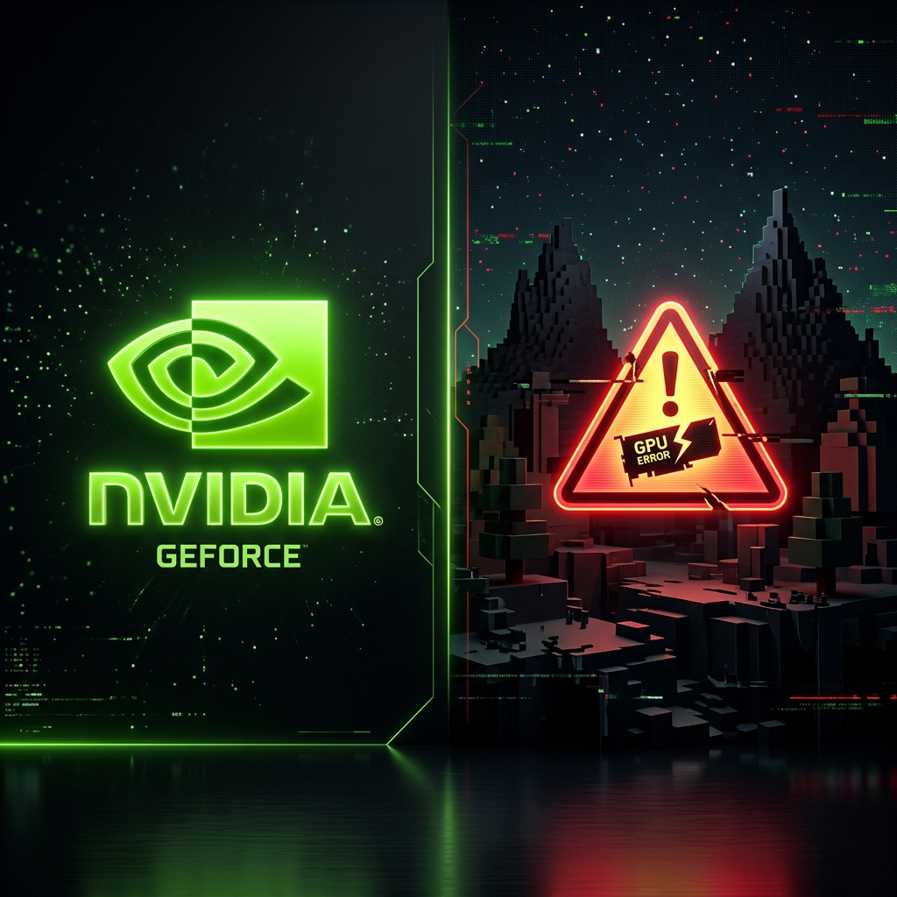

Pantalla Negra en Minecraft con tarjetas NVIDIA y Sodium (Solución Definitiva)

El terror de los portátiles Gamer
Tienes una PC o laptop potente (quizás con una RTX 4050 o similar). Instalas Fabric y el famoso mod de optimización Sodium, esperando tener miles de FPS. Sin embargo, al iniciar el juego, solo ves una pantalla negra y el registro muestra errores como GL_INVALID_OPERATION.
¿Qué está fallando?
El problema no es tu tarjeta de video. Existe un bug conocido entre los drivers recientes de NVIDIA y ciertos "workarounds" (parches) internos del mod Sodium que intentan solucionar fallos antiguos, los cuales terminan rompiendo el renderizado en hardware moderno.
Cómo arreglarlo tú mismo
Tienes que ir a tu carpeta `.minecraft/config`, crear manualmente un archivo llamado `sodium-mixin.properties`, y escribirle adentro el texto `mixin.workarounds=false` para decirle al mod que no use sus parches problemáticos.
La magia de LFZ Launcher
Si usas LFZ Launcher, no tienes que hacer nada de esto. Nuestro equipo implementó un parche de seguridad en el código del launcher: cada vez que le das al botón de Jugar, el LFZ Launcher detecta si tienes una tarjeta NVIDIA y si estás usando Sodium. Si es así, él mismo crea y repara ese archivo `.properties` por ti antes de que el juego abra en fracciones de segundo. Resultado: ¡Juego abriendo perfecto a la primera!